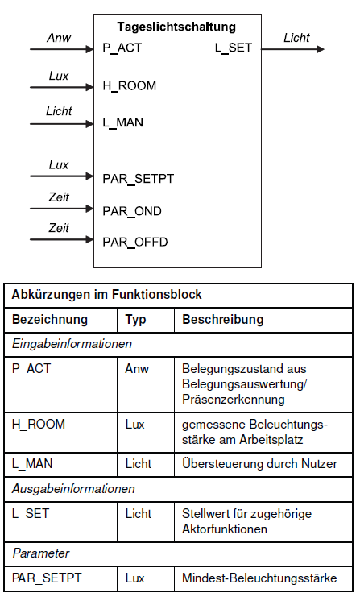

2.2 Steuerung
Ursprünge der Steuerungstechnik und Automatisierung
- 20–62 - Heron von Alexandria Automaten einer Wein und Milch spendenden Bacchus-Figur
- 1784 Webmaschinen von hölzernen Lochkarten
- 1835 erfindet Joseph Henry das elektromechanische Relais
- 1969 Odo J. Struger beim US-Unternehmen Allen-Bradley eine SPS (zeitgleich mit Richard E. Morley)

🧠 Evolution zu Industrie 4.0
-
Industrie 1.0 (1784): Einsatz von mechanischen Webstühlen, die insbesondere durch Lochkarten-Steuerungen und später durch umlaufenden Bänder zu Webmaschinen weiterentwickelt wurden.
-
Industrie 2.0 (1870): erster Einsatz von Fließbändern in den USA (Schlachthöfe) unter Nutzung elektrischer Antriebe, die durch entsprechende Schütz- und Relais-Steuerungen geschaltet wurden.
-
Industrie 3.0 (1969) Speicherprogrammierbaren Steuerungen, Durchbruch bei der Industrieelektronik und Informationstechnik zur massenweisen Steuerung und Automatisierung der Produktion
-
Industrie 4.0 (2012) Cyber-Physikalischer Systeme mit globaler Vernetzung zur global optimierten Steuerung der international organisierten Produktion (Internet der Dinge).
Ablaufsteuerung
- steuert den Ablauf ereignisdiskreter Prozesse (Schrittkette). Beim Erreichen eines Schwellwertes einer Steuergröße (Ereignis) wir ein weiterer Prozess angestoßen.
- z.B. Ablauf in einer Waschmaschine
- z.B. Human Centric Lighting
- z.B. Treppenhauslicht
Beispiel Treppenlichtschaltung
Über die Funktion Treppenlichtschaltung können Beleuchtungseinrichtungen temporär eingeschaltet werden. Nach Ablauf der Treppenlichthaltezeit kann eine Abschaltvorwarnzeit aktiv werden, die den Nutzer z. B. durch kurzzeitige Unterbrechung(„Flackern“) über die bevorstehende Abschaltung informiert. Ein erneuter Empfang einer Eingabeinformation zum Einschalten startet die Verzögerungszeit neu. Die Funktion benötigt als Eingabeinformation das Ergebnis der Bedienfunktion Licht stellen und liefert ihrerseits die Ausgabeinformation für eine oder mehrere Aktorfunktionen Lichtaktor.

Naive Lösung
import time
import board
import digitalio
PAR_HOLD = 3
PAR_WARN = 1
button_pin = board.GP0 # Replace with the GPIO pin connected to your button
button = digitalio.DigitalInOut(button_pin)
button.direction = digitalio.Direction.INPUT
button.pull = digitalio.Pull.UP # Use pull-up resistor; change if using pull-down
led_pin = board.GP1 # Replace with the GPIO pin connected to your LED
led = digitalio.DigitalInOut(led_pin)
led.direction = digitalio.Direction.OUTPUT
while True:
if not(button.value): # Button is pressed (LOW)
print("Button Pressed!")
led.value = True
time.sleep(PAR_HOLD)
for i in range(1,5):
led.value = False
time.sleep(0.1)
led.value = True
time.sleep(0.1)
time.sleep(PAR_WARN)
led.value = False
Probleme mit der naiven Lösung

- Erneutes betätigen des Taster setzt die Wartezeit nicht zurück
- Unser System hat kein Gedächtnis (über den Zustand)
- Der Ablauf sollte besser nicht nur durch einen Zeitlichen Rahmen, sondern auch durch Zustände gesteuert werden
stateDiagram
A : LED ein
B : LED flackert
E : LED aus
[*] --> E : Systemstart
E --> A : L_MAN
B --> A : L_MAN
A --> B : PAR_HOLD
B --> E : PAR_WARN
Finite State Machine (Endlicher Automat)
- In Abhängigkeit vom Systemzustand erwarten wir unterschiedliches Verhalten z.B.
- Nach Tastendruck soll die Lampe angeschaltet werden
- Nach Ablauf einer Wartezeit soll die Lampe ausgeschaltet werden
- Davor gibt es ein Flackern als Warnung
- Nach einem weiteren Tastendruck wird die Wartezeit zurückgesetzt
- Einfache Systeme lassen sich meist durch Ihre Zustände und deren Übergänge beschreiben
- Durch die Beschreibung als State-Machine können wir das Verhalten des Systems sauber trennen und die Implementierung vereinfachen
Implementierung eines Cola-Automaten
- Der Automat startet im Zustand
Auswahl anfordern - Der Automat kann in den Zustand
Bezahlung anfordernwechseln - Wird die geforderte Summe erreicht, wechselt der Automat in den Zustand
Ware ausgeben - Ist die Ausgabe abgeschlossen, wechselt der Automat wieder in den Zustand
Auswahl anfordern - Wird die Bezahlung abgebrochen, wechselt der Automat in den Zustand
Rückgeld herausgebenund dann wieder in den ZustandAuswahl anfordern

(Deterministic) Finite State Machine (Endlicher Automat)
- Dieser Ansatz basiert auf der Theorie der formalen Sprachen
- Eine DFSM beschreibt ein System mit endlich vielen Zuständen beschreibt
- Eine DFSM ist ein 5-Tupel \(M = (Q, \Sigma, q_0, F, \delta)\) mit
- Endlicher Zustandsmenge \(Q\)
- Endliche Eingabealphabet \(\Sigma\)
- Endlicher Startzustand \(q_0 \in Q\)
- Endlicher Endzustandsmenge \(F \subseteq Q\)
- Übergangsfunktion \(\delta: Q \times \Sigma \rightarrow Q\)
In der Theorie der formalen Sprachen 🤓

- \(Q = \{S_1, S_2\}\)
- \(\Sigma = \{0,1\}\)
- \(q_0 = S_1\)
- \(F = \{S_1\}\)
- \(\delta(S_1, 0) = S_2\), \(\delta(S_1, 1) = S_1\)
- \(\delta(S_2, 0) = S_1\), \(\delta(S_2, 1) = S_2\)
- Akzeptiert (endet in \(F\))
1,11,01101,11001
- Akzeptiert nicht (endet nicht in \(F\))
0,10,10100,01001
- Anwendung
- Parser
- Regular Expressions
In der Programmierpraxis
- Die Knoten stellen Systemzustände dar. Innerhalb dieser Zustände muss das Systemen nicht statisch sein (z.B. Zeit muss z.B. mitgezählt werden)
- Die gerichteten Kanten stellen Übergänge zwischen den Zuständen dar, die durch Events und Bedingungen ausgelöst werden
- Die Systemzustände können nur in festgelegten Reihenfolgen durchlaufen werden
- Ein Endzustand ist optional
✍️ Aufgabe 2_2_1: Implementierung eines Treppenhauslichts
- In
code_state_machine.pyist das auf der rechten Seite dargestellte Programm implementiert - Beschreiben Sie verbal, was in jedem der Zustände passiert
- Berücksichtigen Sie dabei im Besonderen, warum es die beiden Zustände
LED leuchtetundLED flackertgibt und diese nicht in einem Zusammengefasst wurden

stateDiagram
A : Start
C: LED an
D: LED leuchtet
E: LED leuchtet2
F: LED flackert
G : LED aus
[*] --> A : Systemstart
A --> C : Taster wird gedrückt
C --> D :
D --> F : PAR_HOLD vergeht
E --> G : PAR_WARN vergeht
F --> E:
D --> C: Taster wird gedrückt
E --> C: Taster wird gedrückt
G --> C: Taster wird gedrückt
✔️ Lösung
Lösung anzeigen
import time
import board
import digitalio
PAR_HOLD = 5
PAR_WARN = 2
state = "start"
if state == "start":
button_pin = board.GP0 # Replace with the GPIO pin connected to your button
button = digitalio.DigitalInOut(button_pin)
button.direction = digitalio.Direction.INPUT
button.pull = digitalio.Pull.UP # Use pull-up resistor; change if using pull-down
led_pin = board.GP1 # Replace with the GPIO pin connected to your LED
led = digitalio.DigitalInOut(led_pin)
led.direction = digitalio.Direction.OUTPUT
state = "LED aus"
print("Erfolgreich gestartet")
while True:
time.sleep(0.5)
if state == "LED aus":
print("State: LED aus \n Warte auf Aktion")
if not(button.value): # Button is pressed (LOW)
print("Button Pressed!")
state = "LED an"
led.value = True
if state == "LED an":
print("State: LED an")
time_start = time.time()
print(" um: ", time.time())
state = "LED leuchtet"
if state == "LED leuchtet":
if not(button.value): # Button is pressed (LOW)
print("Button Pressed!")
state = "LED an"
print("LED leuchtet")
print(" seit: ", time.time() - time_start)
if time.time() - time_start > PAR_HOLD:
state = "LED flackert"
if state == "LED leuchtet2":
if not(button.value): # Button is pressed (LOW)
print("Button Pressed!")
state = "LED an"
print(" seit Warnung: ", time.time() - time_warning)
if time.time() - time_warning > PAR_WARN:
state = "LED aus"
led.value = False
if state == "LED flackert":
for i in range(1,5):
led.value = False
time.sleep(0.1)
led.value = True
time.sleep(0.1)
time_warning = time.time()
state = "LED leuchtet2"
led.value = True
✍️ Aufgabe 2_2_2: State Machine für einen Dimmschalter
- Stellen Sie einen Dimmer vor, der durch halten des Tasters die Helligkeit einer LED über die PWM steuert
- Durch halten des Tasters soll die Helligkeit von 0% auf 100% hoch- bzw. heruntergefahren werden
- Durch Loslassen wir die Richtung umgekehrt
- Durch ein kurzes drücken des Tasters soll die Helligkeit auf 0% bzw. 100% gesetzt werden
- Zeichen Sie eine State Machine, die dieses Verhalten beschreibt

stateDiagram
A : 100%
B : 0%
C : aufwärts
D : abwärts
A --> B: kurzer Druck
B --> A: kurzer Druck
A --> D: langer Druck
B --> C: langer Druck
C --> D: loslassen
D --> C: loslassen
✔️ Lösung
💡 anzeigen
🤓 ✍️ Aufgabe 2_2_3: Implementierung eines Dimmschalter
- Implementieren Sie einen Dimmer
❌ Lösung
Für diese Zusatzaufgabe gibt es noch keine Muster-Lösung. Senden Sie mir gerne Ihre Lösung zu, damit ich sie hier veröffentlichen kann. Für richtig gelöste Aufgaben gibt es 1% Bonus auf die Klausur.
Verknüpfungssteuerungen
- Während Ablaufsteuerungen den Ablauf eines Prozesses steuern, verknüpfen Verknüpfungssteuerungen die Eingangssignale mit den Ausgangssignalen
- Diese Trennung ist jedoch eher akademisch, da die meisten Systeme sowohl Ablauf- als auch Verknüpfungssteuerungen enthalten
Beispiel: Wechselschalter
- Verknüpfungssteuerungen können z.B. durch Wahreheitstabellen und Boolsche Funktionen beschrieben werden
- Später werden wir hierzu noch grafische Beschreibungen kennenlernen (Funktionsplan, Kontaktplan, ...)

Wahrheitstabelle
| Schalter 1 | Schalter 2 | Lampe |
|---|---|---|
| 0 | 0 | 0 |
| 0 | 1 | 1 |
| 1 | 0 | 1 |
| 1 | 1 | 0 |
Boolsche Funktion \(L = (S_1 \land \lnot S_2) \lor (\lnot S_1 \land S_2)\)
✍️ Aufgabe 2_2_4: Implementierung einer vereinfachten Tageslichtschaltung

- Wir vereinfachen die Tageslichtschaltung, indem wir die Zeitparameter weglassen
- Zeichen Sie zunächst eine Wahrheitstabelle für die Tageslichtschaltung
- Setzen Sie
L_MANzunächst aufFalseund schließen Sie dafür nur einen zusätzlichen Button dafür an, wenn Sie mit der restlichen Schaltung fertig sind - Nutzen Sie einen Button, um den Anwesenheitszustand
P_ACTzu simulieren
P_ACT |
H_ROOM < PAR_SETPT |
L_MAN |
L_SET |
|---|---|---|---|
| 0 | 0 | 0 | 0 |
| 1 | 0 | 0 | 0 |
| 0 | 0 | 0 | 0 |
| 1 | 0 | 0 | 0 |
| 0 | 1 | 0 | 0 |
| 1 | 1 | 0 | 1 |
| 0 | 1 | 0 | 0 |
| 1 | 1 | 0 | 1 |
| 0 | 0 | 1 | 1 |
| 1 | 0 | 1 | 1 |
| 0 | 0 | 1 | 1 |
| 1 | 0 | 1 | 1 |
| 0 | 1 | 1 | 1 |
| 1 | 1 | 1 | 1 |
| 0 | 1 | 1 | 1 |
| 1 | 1 | 1 | 1 |
Hinweise
- Baue Sie auf Aufgaben 2_1_3 und 2_1_5 auf
💡 anzeigen
import time
import board
import digitalio
led_pin = board.GP1 # Replace with the GPIO pin connected to your LED
led = digitalio.DigitalInOut(led_pin)
led.direction = digitalio.Direction.OUTPUT
button_pin = board.GP0 # Replace with the GPIO pin connected to your button
button = digitalio.DigitalInOut(button_pin)
button.direction = digitalio.Direction.INPUT
button.pull = digitalio.Pull.UP # Use pull-up resistor; change if using pull-down
while True:
if not button.value: # Button is pressed (LOW)
print("Button Pressed!")
led.value = not led.value # Toggle the LED state
else:
print("Button Released!")
time.sleep(0.1) # Add a small delay to debounce the button
💡 anzeigen
import board
import analogio
import time
from mappings import map_quat
# Initialisierung des ADC (Analog-Digital Converter)
ldr = analogio.AnalogIn(board.A2)
# Wiederholung
while True:
# ADC als Dezimalzahl lesen
read = ldr.value
# Ausgabe in der Kommandozeile/Shell
print("ADC:", read)
print("E in Lux", map_quat(read))
# Warten
time.sleep(1)
💡 anzeigen
def map_lin(z):
E_max = 1
E_min = 0
z_max = 65535
z_min = 0
beta_0 = E_min
beta_1 = (E_max - E_min) / (z_max - z_min)
return beta_0 + beta_1 * z
def map_quat(x):
s = 44000
a = 0.0015
return ((x-s)*a) **2
✔️ Lösung
💡 anzeigen
import board
import analogio
import time
import digitalio
from mappings import map_quat
# LED
led_pin = board.GP1 # Replace with the GPIO pin connected to your LED
PAR_SETPT = digitalio.DigitalInOut(led_pin)
PAR_SETPT.direction = digitalio.Direction.OUTPUT
# Button
button_pin = board.GP0 # Replace with the GPIO pin connected to your button
button = digitalio.DigitalInOut(button_pin)
button.direction = digitalio.Direction.INPUT
button.pull = digitalio.Pull.UP # Use pull-up resistor; change if using pull-down
# Initialisierung des ADC (Analog-Digital Converter)
ldr = analogio.AnalogIn(board.A2)
L_MAN = False
L_SET = 300
# Wiederholung
while True:
P_ACT = button.value
# ADC als Dezimalzahl lesen
H_ROOM = ldr.value
print("E in Lux", map_quat(H_ROOM))
PAR_SETPT.value = (P_ACT and map_quat(H_ROOM) < L_SET) or L_MAN)
# Warten
time.sleep(1)